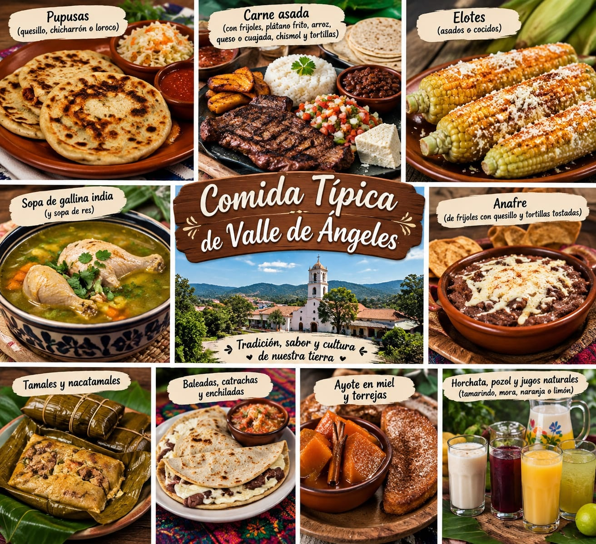
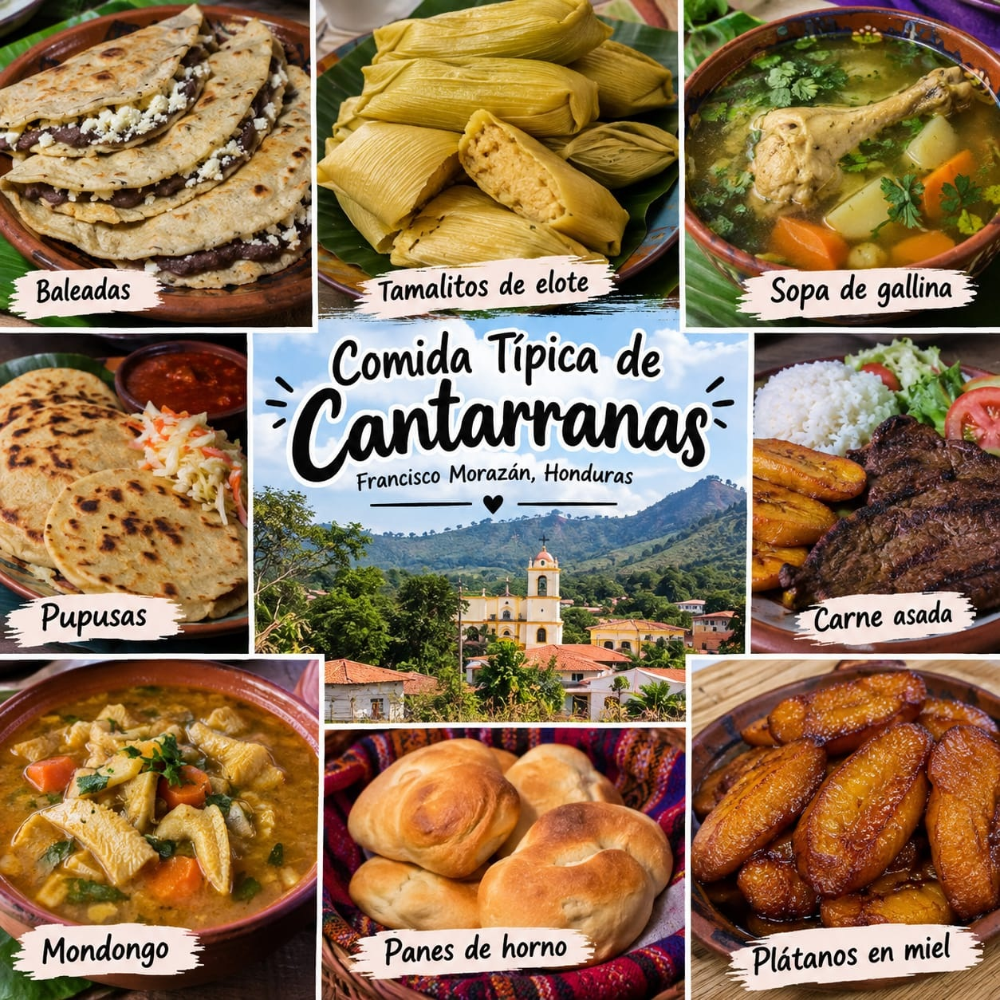
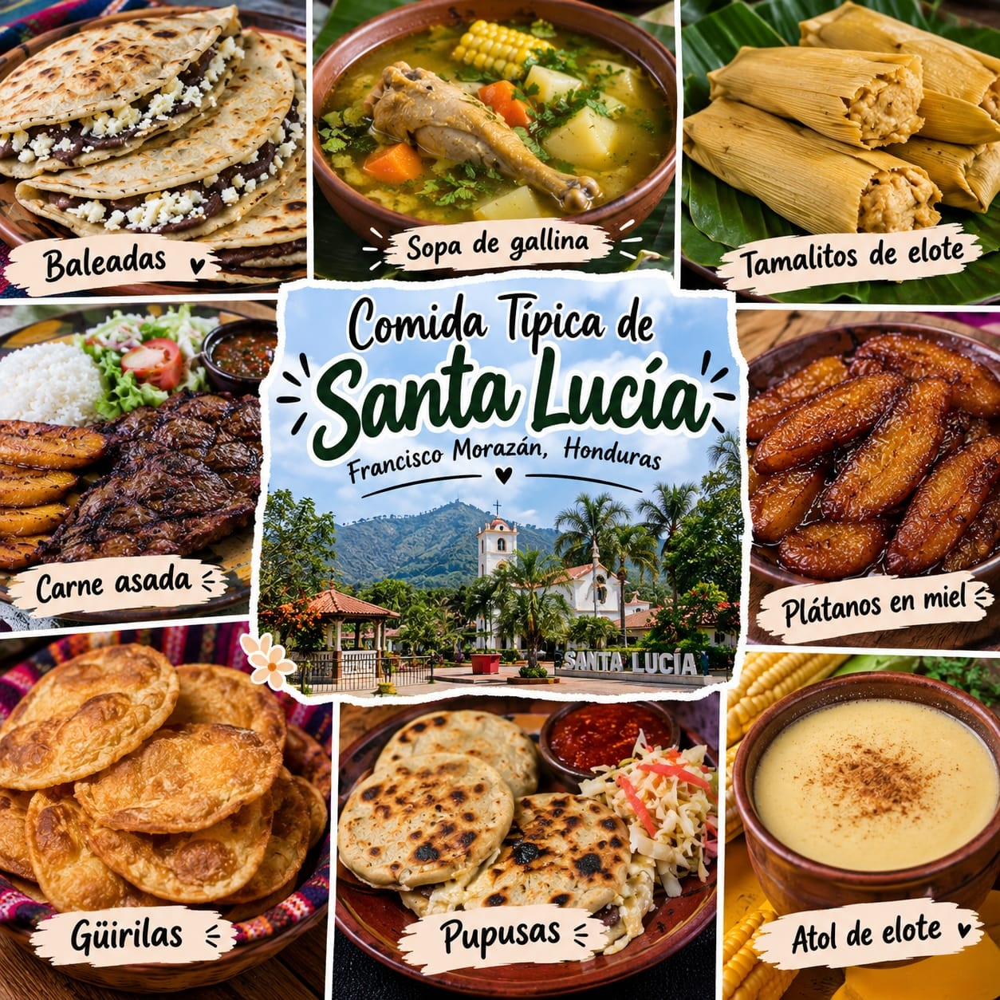
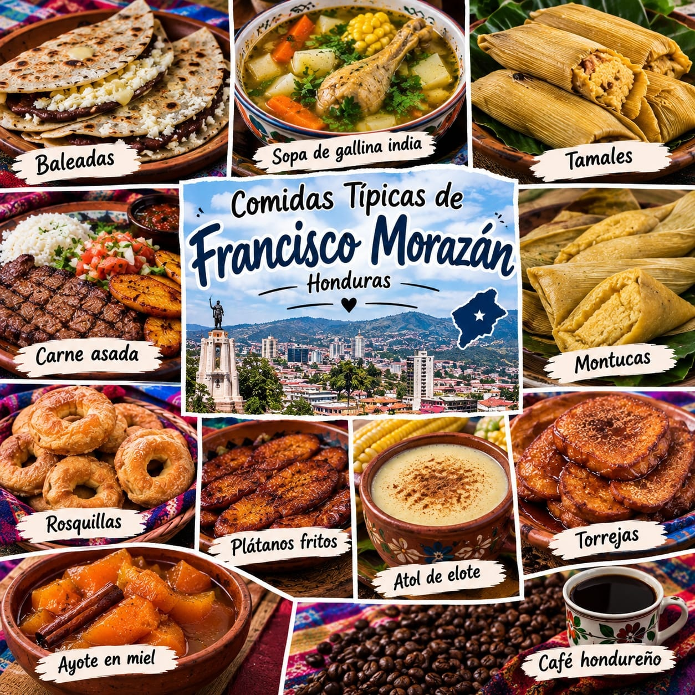
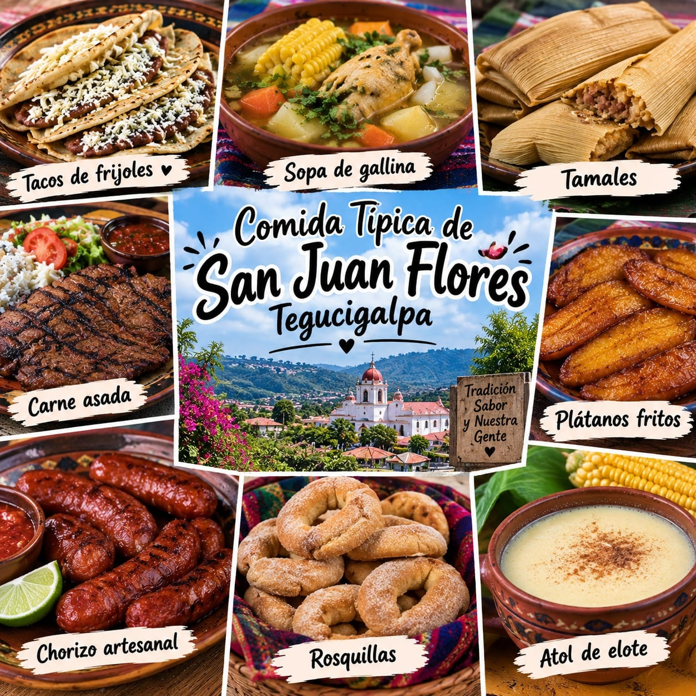
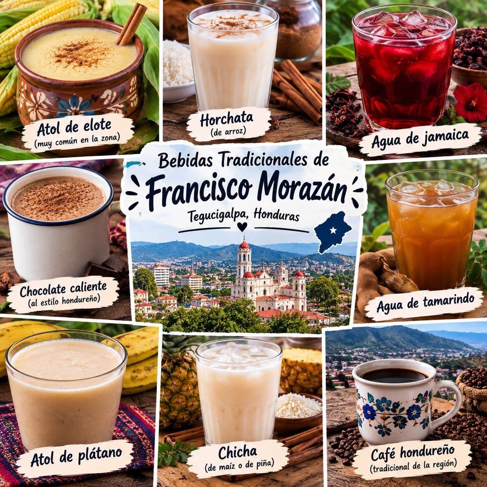

Gastronomía de Francisco Morazán
El departamento de Francisco Morazán cuenta con una variedad de comidas tradicionales hondureñas. Sus municipios ofrecen sabores y costumbres que forman parte de la cultura nacional.
-

Valle de Ángeles
Comidas típicasValle de Ángeles es conocido por su ambiente turístico, sus artesanías y sus establecimientos de comida. Los visitantes pueden disfrutar de diferentes platillos tradicionales hondureños.
-

Cantarranas
Gastronomía tradicionalCantarranas conserva las tradiciones de la cocina hondureña. En este municipio se pueden encontrar comidas preparadas con ingredientes de la gastronomía nacional.
-

Santa Lucía
Sabores tradicionalesSanta Lucía es un destino turístico donde los visitantes pueden encontrar restaurantes, comidas tradicionales y bebidas para disfrutar durante su visita.
-

Francisco Morazan
Comida hondureñaEn Francisco Morazan se encuentran restaurantes y mercados donde se pueden disfrutar baleadas, tortillas, tamales y otros alimentos tradicionales de Honduras.
-

San Juan de Flores
Tradición y saborSan Juan de Flores forma parte de la riqueza cultural de Francisco Morazán. Su gastronomía refleja las costumbres y los sabores de la cocina hondureña.
-

Bebidas tradicionales
Bebidas hondureñasEntre las bebidas tradicionales de Honduras se encuentran el café, la horchata y los refrescos naturales preparados con frutas.